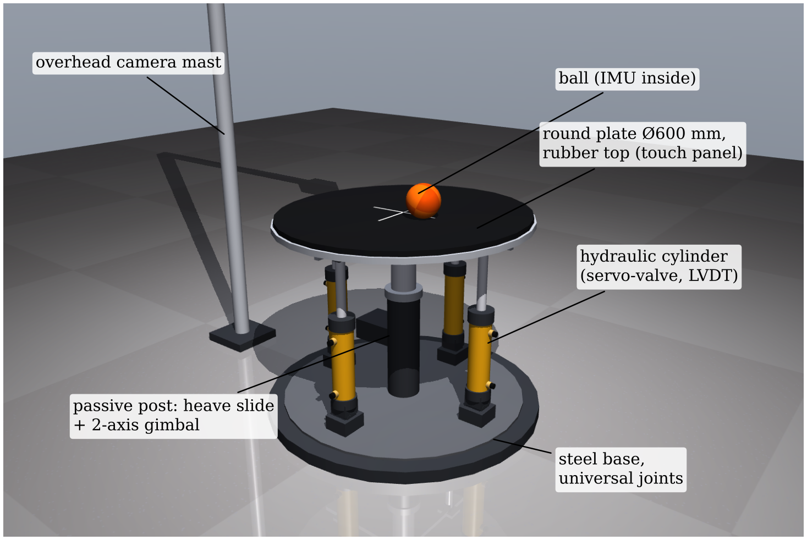
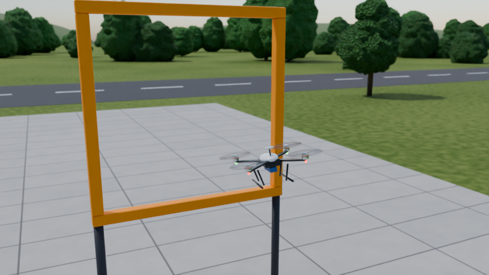
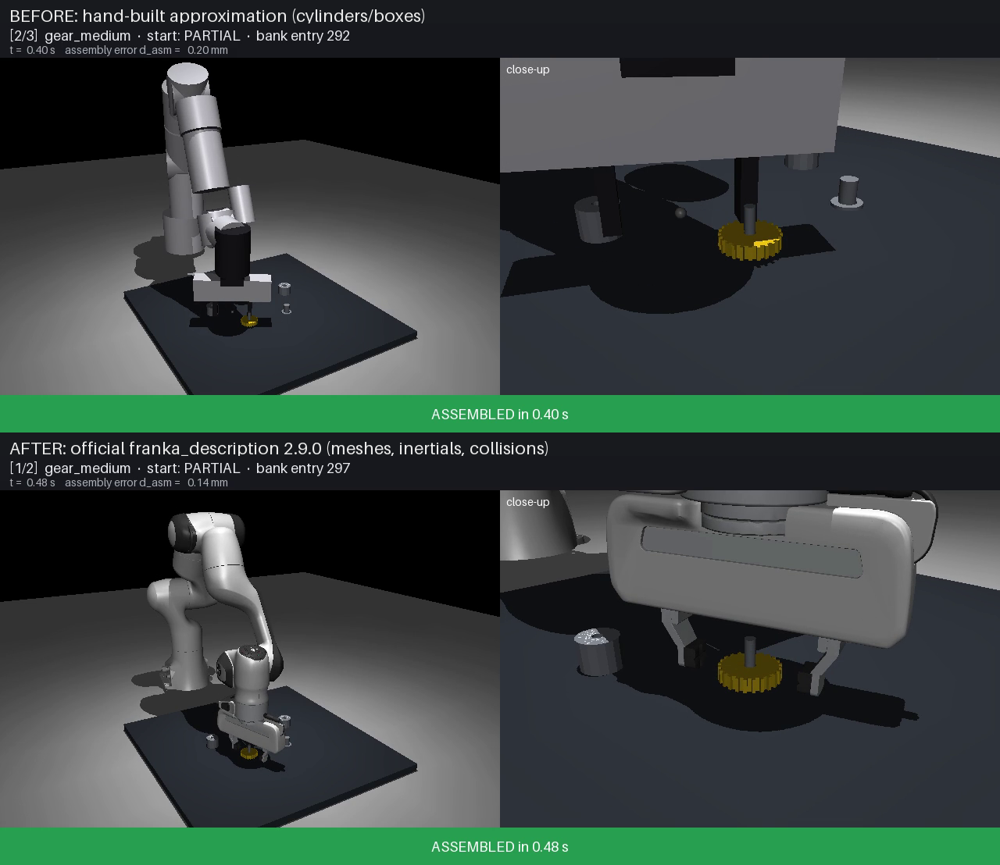
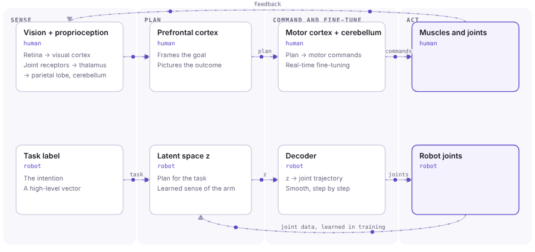
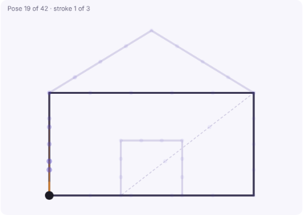
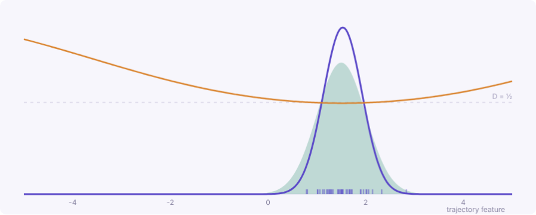
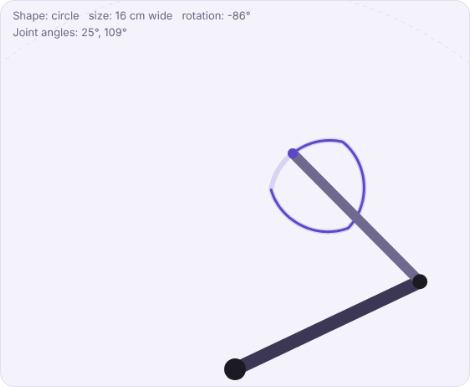

Robotics: control, simulation & hardware
Physical rigs and embedded firmware, ROS 2 and Gazebo simulation, and robot learning. Built in Docker, with control and state estimation throughout.
Robots in motion
Control, estimation and learning in ROS 2, Gazebo and MuJoCo, with interactive demos.

01.1Self-Balancing Ball
A round platform on four independently controlled hydraulic rods keeps a ball on its surface. Position is estimated three ways, one after another: direct measurement, single-camera vision, and IMU sensor fusion. Classical control only.

01.2Quadcopter Control
A quadcopter in ROS 2 and a simulator, controllable from a joystick-style interface and autonomously by a controller, with a visualisation of the flight.

01.3Panda Drawing Robot WIP
A Franka Panda that draws sketches on paper with a pen, using QuickDraw stroke data. The next stage is a generative model that lets the robot learn to draw from a prompt.
Ideas from my PhD
Generative models that teach robots whole tasks, explained with interactive demos. Thesis and papers are linked from each page.

02.1Planning and Control in One Network
Inspired by how the brain plans a task and controls the body, a CNN-VAE and a CNN-LSTM VAE join robot task planning and motor control in one generative network, using proprioception alone.

02.2Robot Motion as a Language
A robot task reads like a sentence: each Panda pose is a word, linked by attention to near and far poses. Transformer-VAE models learn these links to generate whole tasks. Includes an interactive attention explorer.

02.3Learning a Task as a Game
An implicit generative model learns a robot task's inner structure from demonstrations alone. A generator and a judge compete until they reach a Nash equilibrium. Includes a live GAN you can train in the browser.

02.4Seeing Tasks Like People Do
People see objects by their factors: shape, size, position, orientation. Computers see pixels. A β-VAE learns those factors on its own, so a robot task can be controlled one factor at a time. Includes an interactive demo with a SCARA arm.
The lab behind the work
The physical robots, embedded controller and computing facility used across my PhD.
 03.1
03.1
Robotics Lab Ecosystem
A SCARA arm on a custom embedded controller, managed from a ROS 2 workstation and networked to a GPU cluster and shared storage. Demonstrations go in, trained models come back to drive the arm. The platform behind all my PhD robotics work.